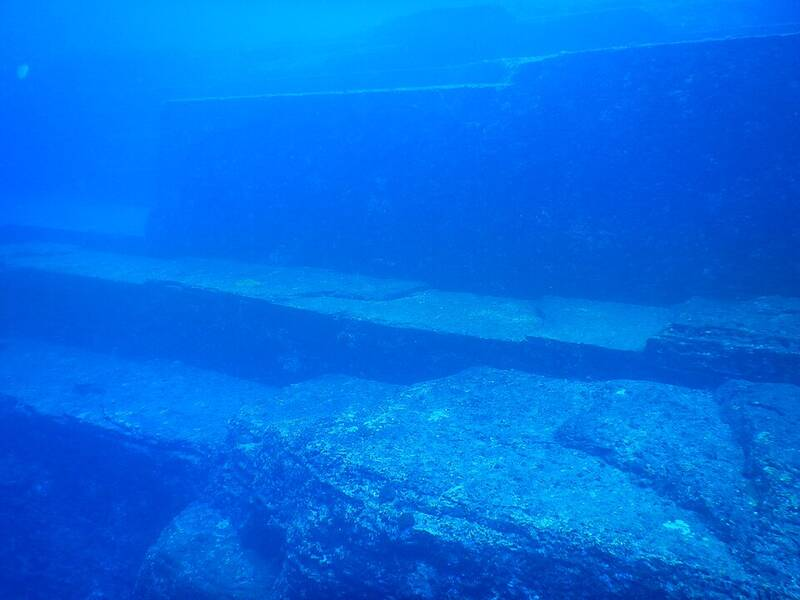

Yonaguni Monument
Off Yonaguni, Ryukyu Islands, Japan

A submerged sandstone formation spotted by a diver in 1986. Marine geologist Masaaki Kimura claims it is a man-made stepped monolith. His claims have been described as pseudoarchaeological, and neither Japan's Agency for Cultural Affairs nor the Okinawa government recognises it as a cultural site. 1
Open in the interactive Watcher
Sources
- Yonaguni Monument Wikipedia